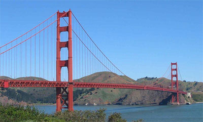
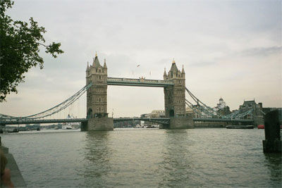
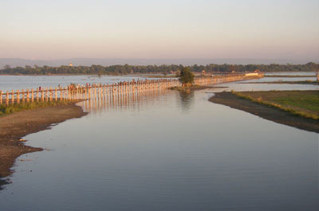
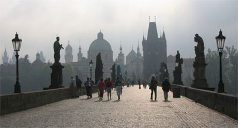

Навігація
Партнери
|
|
Найвiдомiшi мости
- Міст «Золоті Ворота»
- Тауер Бридж
- Бруклінський міст
- Міст Зітхань
- Карлов міст
- Акаси-Кайке
- Ататюркський міст
- Міст У Байн

«Золоті ворота»
- Міст «Золоті Ворота»
Знаходиться в Сан-Франциско, США;
перекинутий через однойменну протоку. Відкритий в 1937 року.
Відноситься до типу висячих мостів, споруджений із сталі.
Висота основного прольоту — 230, довжина основного прольоту — 1280,
загальна довжина — 1970 метрів. Близько тридцяти років «Золоті ворота»
займав перше місце в списку найбільших мостів миру. За більш ніж
сімдесят років, що пройшли з моменту його відкриття, міст став
можливо самим впізнанним з символів Сан-Франциско. Сумно
відомий як «міст самовбивць» — вже більше тисячі чоловік
наклали на себе руки, зістрибнувши у воду з цього моста.
- Тауер Бридж
Розвідний міст через Темзу у Лондоні,
Великобританія, відкритий в 1894 року. Знаменитий завдяки двом
баштам заввишки по 65 метрів кожна, встановленим на засадах.
- Бруклінський міст
Один із старих підвісних мостів США.
Сполучає райони Бруклін і Манхеттен у Нью-Йорку, перетинаючи
протоку Іст-Рівер. Був відкритий в 1883 року; на момент
написання це — найбільший підвісний міст в світі. Бруклінський
міст — перший в світі, в конструкції якого використовувалися
сталеві лозини.
- Міст Зітхань
Арочний міст у стилі барокко. Перекинутий
через Палацовий канал у Венеції, Італія, і сполучає Палац Дожів
(у якому розташовувався суд) і в'язницю. По легенді, назва моста
походить від зітхань засуджених, які, проходячи по мосту, кидали
свій останній погляд на Венецію.

Тауер Бридж
- Карлов міст
Арочний готичний міст, прикрашений барочною
скульптурою, через річку Влтава у Празі, Чехія. Зберігся з Середніх
століть, відомий завдяки баштам на вході на міст і тридцятьма
скульптурами, що прикрашають міст.
- Акаси-Кайке
Щонайдовший підвісний міст і найвищий міст
в світі. Знаходиться в Японії, перетинає протоку Акаси і сполучає
міста Кобе і Авадзі. Висота головного прольоту — 297 метрів,
загальна довжина моста — 3911 метрів.

Дерев'яний міст У Байн в Бірмі
- Ататюркський міст
Перший висячий міст через Босфор,
сполучає азіатську і європейську частини Стамбулу, Туреччина.
Був відкритий в 1973 року до п'ятдесятиріччя Турецької Республіки.
Прохід пішоходів заборонений у зв'язку з тим, що міст неодноразово
намагалися використовувати для здійснення самогубств.
- Міст У Байн
Найбільший в світі дерев'яний міст завдовжки
більше двох кілометрів через озеро між містом Мандалай і
колишньою столицею Анарапурою у Бірмі.

Карлов міст
|
|